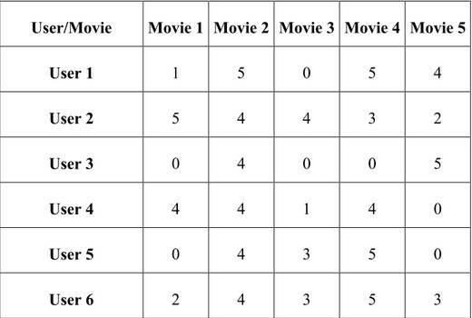

bigdata algorithms
solutions
- classification
- regression
- clustering
- recommendation model
classification
- bayes classification
- knn classification
- logistic regression
- gaussian discriminant analysis
- ann
bayes classification
$$P(A|B) = \frac{P(B|A)P(A)}{P(B)}$$
$$P(y=1;f1, f2, f3) + P(y=0;f1, f2, f3) = 1$$
$$P(f1, f2, f3) = \sum_{i=1}^{n}P(f1, f2, f3|y_{i})P(y_{i})$$
$$P(f1, f2, f3|y) = P(f1|y) \times P(f2|y) \times P(f3|y)$$
knn classification
logistic regression
$$J(\theta) = \frac{1}{m} \sum_{i=1}^{m}Cost(h_{\theta}(x^{(i)}), y^{(i)})$$
$$-\frac{1}{m}[\sum_{i=1}^{m}y^{(i)} \cdot log(h(x^{(i)})) + (1-y^{(i)}) \cdot log(1-h(x^{(i)}))]$$
$$\theta_{j} := \theta_{j} - \alpha\sum_{i=1}^{m}(h_{\theta}(x^{(i)})-y^{(i)})x_{j}^{(i)}, \; (j = 0 \; ... \; n)$$
GDA
$$\begin{align*} &p(x|y = 0) \\ & = \frac{1}{(2\pi)^{\frac{n}{2}}|\Sigma|^{\frac{1}{2}}}exp\left ( -\frac{1}{2}(x-\mu_{0})^{T} \Sigma^{-1} (x-\mu_{0}) \right ) \\ &p(x|y = 1) \\ & = \frac{1}{(2\pi)^{\frac{n}{2}}|\Sigma|^{\frac{1}{2}}}exp\left ( -\frac{1}{2}(x-\mu_{1})^{T} \Sigma^{-1} (x-\mu_{1}) \right ) \end{align*}$$
ann
$$ a^{(l)} = g(W^{(l)}\cdot a^{(l-1)}) $$
$$ \delta ^{(L)} = a^{(L)} - y^{(i)} $$
$$\Delta ^{(l)} = \begin{bmatrix} 0 \end{bmatrix}$$
$$ \Delta ^{(l)} := \Delta ^{(l)} + \delta ^{l+1}\cdot\left(a^{(l)}\right)^{T} $$
$$ W^{(l)} := W^{(l)} - \left(\rho \cdot \Delta ^{(l)} + \Lambda \cdot \delta^{(l)}\right) $$
regression
- linear regression
- nonlinear regression
- ann
linear regression
$$\underset{\beta}{arg \; min}\frac{1}{2N}\sum_{i=0}^{N}(Y_{i}-\hat{Y_{i}})^{2}$$
nonlinear regression
method1
$$Y = \beta_{0} + \beta_{1} x_{i} + \beta_{2} x_{i}^{2} + \cdots$$
mapping the nonlinear problem into a higher dimension space treat as a linear problem
method2
just use ANN to fit the nonlinear data
clustering
- k-means
- som
- em
k-means
$$\underset{c, \mu}{arg \; min} J(c, \mu) = \sum_{i=1}^{m} \left \| x_{i} - \mu_{c^{i}} \right \|^{2}$$
som
em
Mixtures of Gaussians and The EM algorithm
E-step(expectation)
$$w_{i}^{j} := P(z_{i} = j | x_{i}; \phi, \mu, \Sigma)$$
$$\begin{align*} p(z_{i} = j | x_{i}; \phi, \mu, \Sigma) & = \\ & \frac{p(x_{i}|z_{i}=j; \mu, \Sigma)p(z_{i} = j; \phi)}{\sum_{l=1}^{k}p(x_{i}|z_{i}=l; \mu, \Sigma)p(z_{i} = l; \phi)} \end{align*}$$
M-step(maximization)
$$\begin{align*} & \phi_{j} := \frac{1}{m}\sum_{i=1}^{m}w_{i}^{j} \\ & \mu_{j} := \frac{\sum_{i=1}^{m}w_{i}^{j}x_{i}}{\sum_{i=1}^{m}w_{i}^{j}} \\ & \Sigma_{j} := \frac{\sum_{i=1}^{m}w_{i}^{j}(x_{i}-\mu_{j})(x_{i}-\mu_{j})^{T}}{\sum_{i=1}^{m}w_{i}^{j}} \end{align*}$$
recommendation models
- content-based filtering
- collaborative filtering
- svd
content-based filtering

generalization
$$\underset{\beta_{1}, \beta_{2}, \cdots, \beta{u}}{arg \; min} \left [ \sum_{u=1}^{U}\sum_{i:r(i,u) = 1}\left ( (\beta_{u})^{T}X_{i} - Y_{u, i} \right )^{2} + \\ \frac{\lambda}{2}\sum_{u=1}^{U}\sum_{j=1}^{N}\beta_{u, j}^{2} \right ]$$
collaborative filtering
$$\begin{align*} & \underset{X_{i}}{arg \; min} \left [ \sum_{u:r(i, u)=1}\left ( (\beta_{u})^{T}X_{i} - Y_{u, i} \right )^{2} + \frac{\lambda}{2}\sum_{j=1}^{N}X_{i, j}^{2} \right ] \\ & X_{i, j} \; represent \; the \; Jth \; item \; of \; X_{i} \end{align*}$$
generalization
$$\underset{X_{1}, X_{2}, \cdots, X_{n}}{arg \; min}\left [ \sum_{i=1}^{n}\sum_{u:r(i, u)=1}\left ( (\beta_{u})^{T}X_{i} - Y_{u, i} \right )^{2} + \\ \frac{\lambda}{2}\sum_{i=1}^{n}\sum_{j=1}^{N}X_{i, j}^{2} \right ]$$
$$r_{x, y} = \frac{\sum x_iy_i-n \bar{x} \bar{y}}{(n-1) s_x s_y}= \\ \frac{n\sum x_iy_i-\sum x_i\sum y_i} {\sqrt{n\sum x_i^2-(\sum x_i)^2}~\sqrt{n\sum y_i^2-(\sum y_i)^2}}$$
just calculate the similarity with the preferenced object and not preferenced object and recommend the object with high score
svd

de-noising
$$A_{m \times n} = U_{m \times m} \times S_{m \times n} \times V_{n \times n}^{T}$$
$$A_{m \times n} = U_{m \times m} S_{m \times n} V_{n \times n}^{T} \approx \hat{A_{m \times n}} = U_{m \times k} S_{k \times k} V_{k \times n}^{T}$$
reduce-dimension
$$\begin{align*} \Sigma & = \frac{1}{m}\sum_{i=1}^{m} X_{i}X_{i}^{T} \\ & = \frac{1}{m}X^{T}X \end{align*}$$ $$for \; single \; sample \; \hat{X_{i}} = U_{reduce}^{T} X_{i}$$ $$for \; sample \; space \; \hat{X} = X U_{reduce}$$
incremental-svd
$$for \; new \; user \; P = N_{u} \times V_{k} \times S_{k}^{-1}$$ $$for \; new \; item \; P = N_{i}^{T} \times U_{k} \times S_{k}^{-1}$$
$$\begin{align*} & E = \frac{1}{2}\sum_{i=1}^{n}\sum_{j=1}^{m} I(i, j)(R_{ij} - p(U_{i}, V_{j}))^{2} + \\ & \frac{k_{u}}{2}\sum_{i=1}^{n}\left \| U_{i} \right \|^{2} + \frac{k_{v}}{2}\sum_{j=1}^{m}\left \| V_{i} \right \|^{2} \end{align*}$$
$$\begin{align*} & -\frac{\partial E}{\partial U_{i}} = \sum_{j=1}^{m}I(i, j)((R_{ij} - p(U_{i}, V_{j}))V_{j}) - k_{u}U_{i} \\ & s.t. \; i=1,\cdots,n \\ & -\frac{\partial E}{\partial V_{j}} = \sum_{i=1}^{n}I(i, j)((R_{ij} - p(U_{i}, V_{j}))U_{i}) - k_{v}V_{k} \\ & j=1,\cdots,m \end{align*}$$
$$\begin{align*} & U_{i} := U_{i} - \mu \frac{\partial E}{\partial U_{i}} \\ & V_{j} := V_{j} - \mu \frac{\partial E}{\partial V_{j}} \end{align*}$$
$$RMSE(P, R) = \sqrt{\frac{\sum_{i=1}^{n} \sum_{j=1}^{m}I(i, j)(R_{ij} - P_{ij})^{2}}{\sum_{i=1}^{n} \sum_{j=1}^{m} I(i, j)}}$$
one more thing
model is cheap, show me the feature